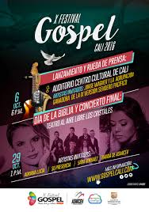

El artista del mes
Édgar Alexánder Campos Mora (17 de septiembre de 1976, Bogotá, Colombia), más conocido como Álex Campos, es un cantante, músico y compositor colombiano de música cristiana.Es considerado uno de los mayores y principales exponentes de la música cristiana1ganador de cuatro Premios Grammy Latinos por mejor álbum cristiano en español. Desde 2001 pertenece a la compañía musical Misión Vida, fundada por él mismo para promover su ministerio. Es intérprete de varios temas conocidos en el ámbito cristiano como «Sueño de morir», «Al taller del maestro», «Me robaste el corazón», «Tu poeta», «Como el color de la sangre», «El Sonido Del Silencio», «No tiene prisa», «Lenguaje de amor», «Derroche de amor», «Amigos», <>,entre otros. Sus hijos Juanita Campos y Simon Campos de (10-7) años de edad.
Desde temprana edad asistió a una iglesia protestante local. A los 17 años Álex formó la banda llamada "Misión Vida". Cuando cumplió 20 años logró hacer su primer trabajo discográfico Tiempo de la cruz, así llevaron su primera gira en Venezuela. En 1998, formó la disquera musical cristiana Misión Vida Recordi (MV Records). En 2001, Álex realizó su primera salida del país a Quito en Ecuador. Su mejor amigo se llama Ricardo Torres con quien inicio su carrera musical y han tocado juntos en varios conciertos.

Ven al Festival Gospel Cali
La música góspel se escuchará en Cali a partir de este sábado. Ese día se llevará a cabo el lanzamiento del VI Festival de Música Góspel, organizado por diversas iglesias cristianas, con apoyo la Secretaría de Cultura y Turismo Municipal.
En ese encuentro, se darán a conocer las mejores tres bandas que participan del cuarto concurso de música cristiana.
Este festival nace en Cali en el 2007 por el impulso de una manifestación cultural que cada vez gana mayor espacio en la sociedad caleña. Es por esto que la Secretaría de Cultura y Turismo de Cali, con el objetivo de promover espacios de reconocimiento al talento caleño, impulsa la realización de estas manifestaciones culturales.
En el concurso se inscribieron 59 bandas que presentaron un video en vivo de dos canciones inéditas. “Su desempeño determinó si pasaban a la segunda etapa de audiciones, obteniendo la presentación en vivo de 34 bandas que mostraron su talento. Luego el jurado calificador escogió los mejores 10 grupos para participar en el festival”, dijeron Daniel Zapata y Samuel Iriarte responsables del IV Concurso de Bandas Cristianas.